最近使用exe4j将java执行文件“jar”转为“exe”执行文件收获良多。在网上有关这反面的资料还是相对比较少，尤其是通过在Eclipse中通过ANT构建那更是少之又少而且起不到实际的帮助作用。通过一晚上的研究颇有成功和心得，现在记录下来以备以后忘记也和大家一起共享下。
前言
为什么要将Jar转成exe执行文件
1、 开发人员开发出来的软件一般都是给普通用户使用，而普通用户一般都是使用的window系统。而exe是window系统上的可执行文件，根据符合大众的习惯和常识。
2、从商业软件的角度来说 对于普通用户而言 jar还是有很多不方便的地方比如说用户的机器.jar格式文件是默认以其它方式打开(如rar), 那么双击jar文件时就不能正常运行再比如说用户没有装jre, 那么程序不能运行，且不能给出友好的提示而如果是exe的话，由于没装jre而不能运行的话，则可以友好的告诉用户还没安装jre 提示安装
3、 引用程序图标问题jar执行文件不能更改图标而exe是可以的。
安装exe4j
1、 下载exe4j并进行安装
exe4j下载路径选择符合自己操作系统的安装程序。如何安装在这就不多说了直接一直按next就ok了。
Jar转exe
1、准备好需要转换成exe的jar前提条件就是要保证jar值可执行的文件不能是一个错误的jar包
2、运行exe4j打开的界面如下图
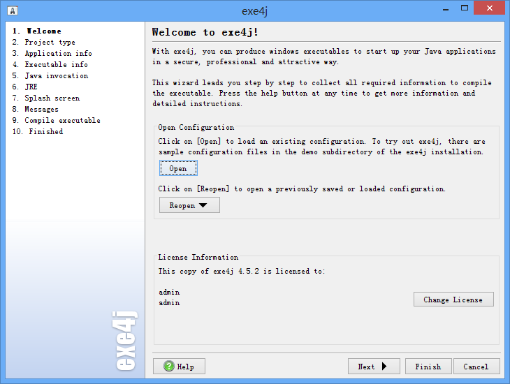
3、获取license
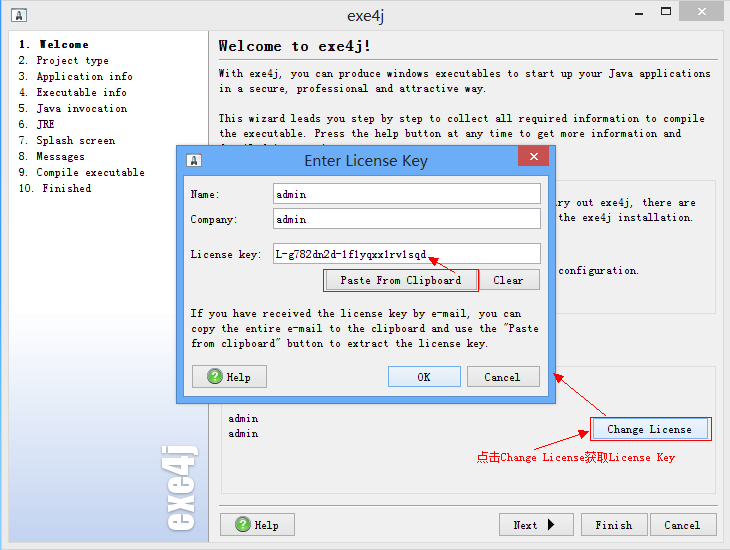
4、点击Next进入下一步
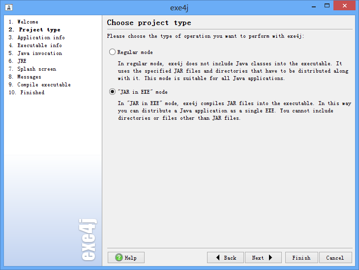
在这个界面中我们将选择“JAR”in“EXE”mode选项
5、点击Next进入下一步
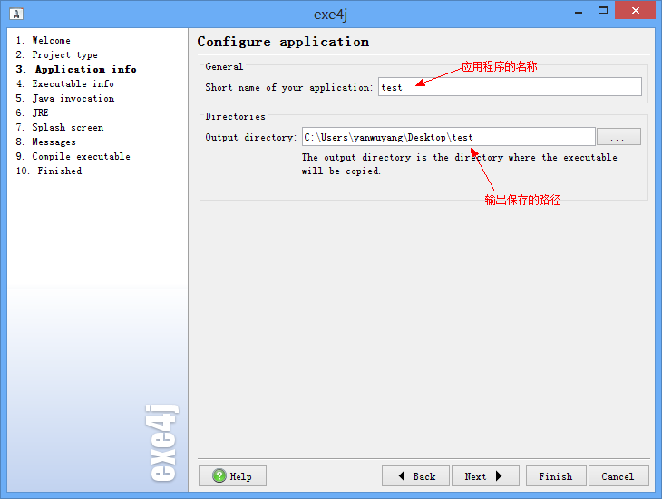
6、点击Next继续下一步
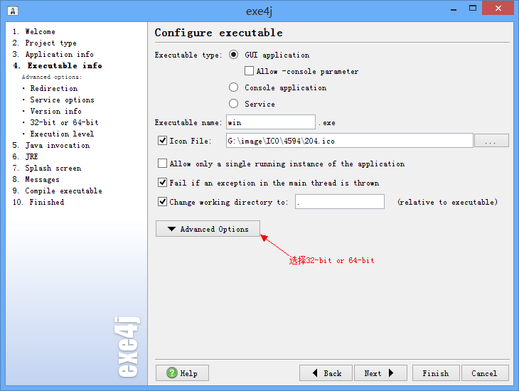
Icon File是选择应用程序的图标
Executable name 是应用程序的名称
在Advanced Options选项中我们选择32-bit or 64-bit这样更好的兼容的兼容系统，选择32-bit or 64-bit后进来界面
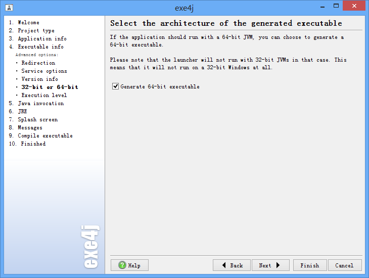
7、点击Next继续下一步
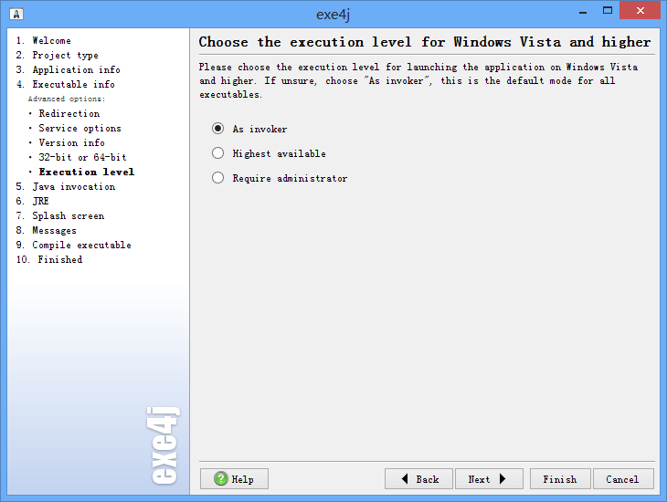
8、点击Next继续下一步
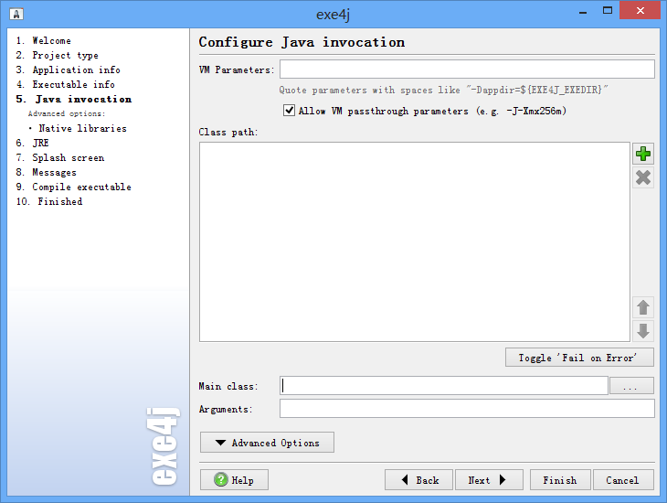
点击界面中的“＋”号选择目标Jar文件
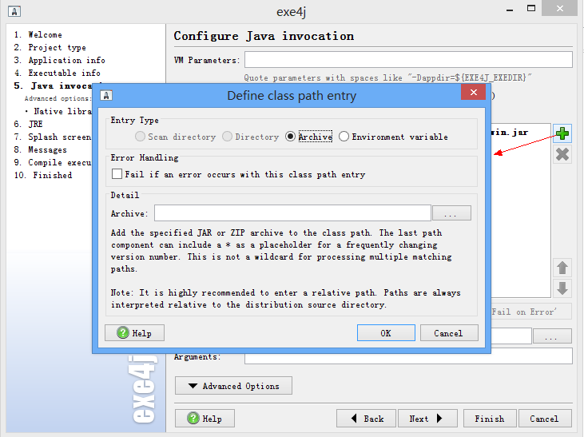
选择Main函数所在的class类文件
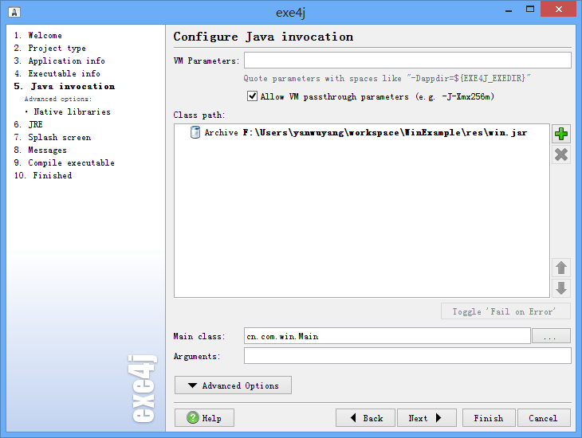
VM Parameters是有关虚拟机的一些设置参数在这里我们可以不填直接按Next
9、点击Next继续下一步
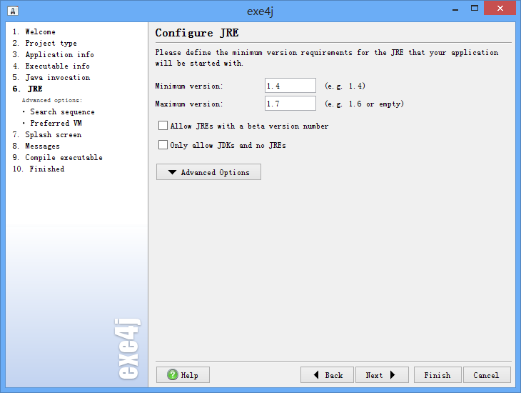
在这里 Minimum version 和Maximum version 是输入的Jre的最小和最大版本
10、点击Next继续下一步
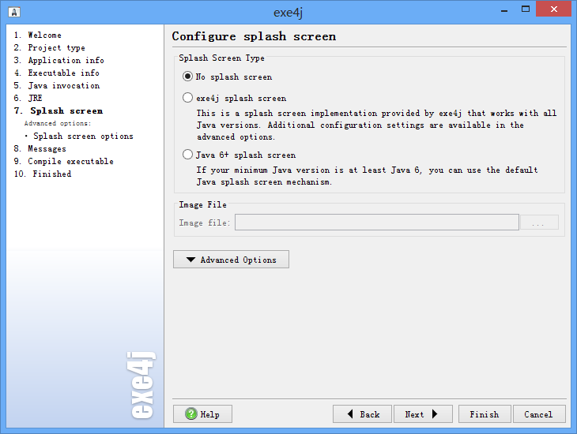
11、点击Next继续下一步
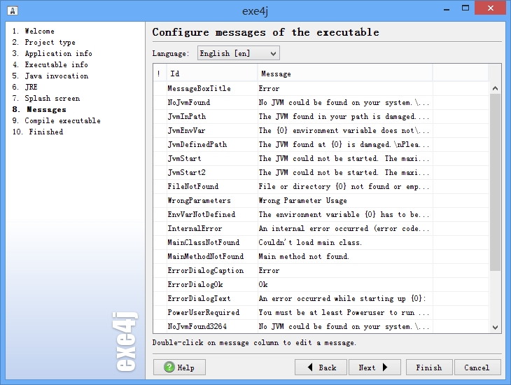
12、点击Next继续下一步
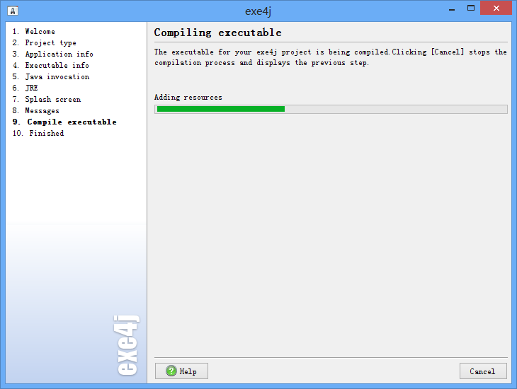
稍等片刻就到了下个界面
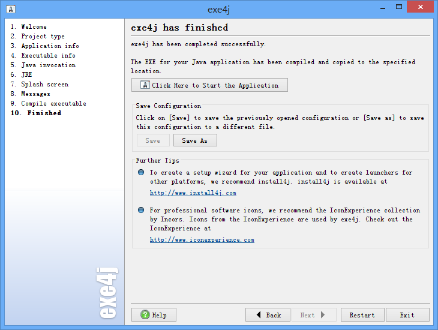
点击Click Here to Start the Application 进行测试
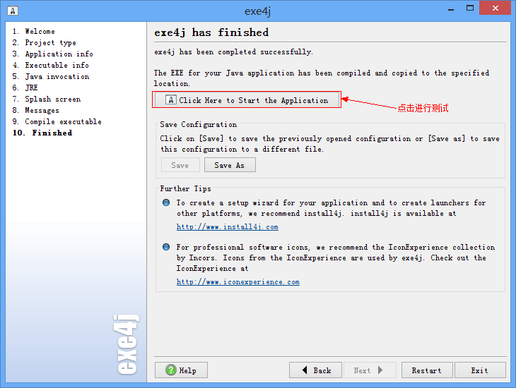
测试运行
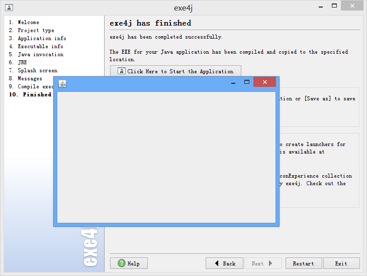
测试成功。
我们在来看看我们设置的输出路径看看我们的文件有没有生成，呵呵文件果然生成了
点击win.exe
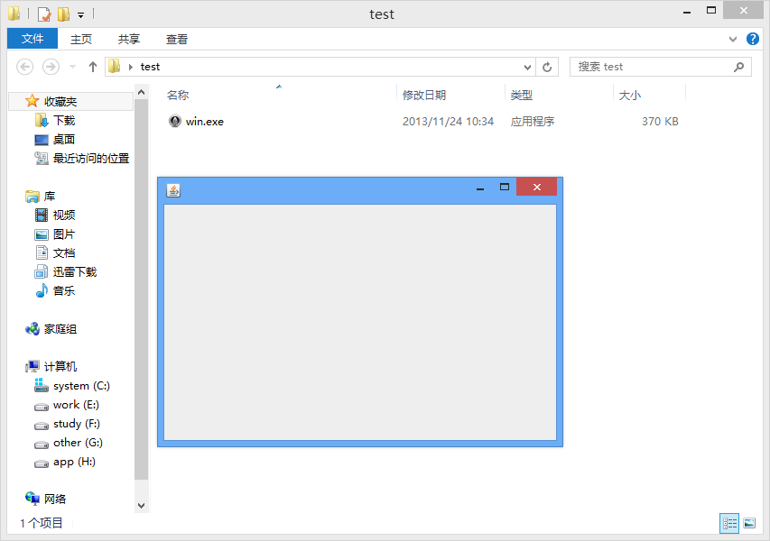
Ant自动构建EXE
新建项目
创建好工程目录并写Mian函数类
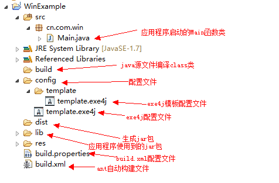
获取exe4j的配置文件
运行exe4j
点击Open选择exe4j的配置文件
我们选择exe4j安装目录下的/config/template.exe4j，一直按照上面的操作重新做一遍这里就不做重复最后点击关闭
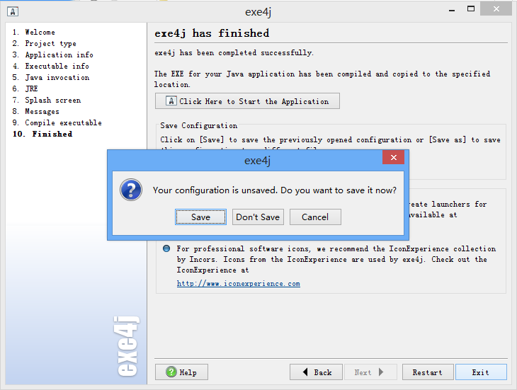
弹出对话框我们选择保存
在到template.exe4j所在目录复制template.exe4j到Eclipse工程config/template/目录下，我们也可以看看template.exe4j文件的内容选择文件右键文本文件打开。如下图就是我们刚才设置的一写参数，如果你对这些很熟当然也可直接在这里进行编辑。下面我们就会说到这这个文件里对参数进行编辑。
我们需要对得到的配置文件进行先修改修改成如下，将修改好的文件放到Eclipse工程config/template目录下1
2
3
4
5
6
7
8
9
10
11
12
13
14
15
16
17
18
19
20
21
22
23
24
25
26
27
28
29
30
31
32
33<?xml version="1.0" encoding="UTF-8"?>
<exe4j version="4.5.2" transformSequenceNumber="1">
<directoryPresets config="H:/Program Files (x86)/Java" />
<application name="PMS" distributionSourceDir="@distributionSourceDir@">
<languages>
<principalLanguage id="en" customLocalizationFile="" />
</languages>
</application>
<executable name="@app.name@" type="2" iconSet="true" iconFile="@iconFile@" executableDir="" redirectStderr="true" stderrFile="error.log" stderrMode="overwrite" redirectStdout="false" stdoutFile="output.log" stdoutMode="overwrite" failOnStderrOutput="true" executableMode="1" changeWorkingDirectory="true" workingDirectory="." singleInstance="false" serviceStartType="2" serviceDependencies="" serviceDescription="" jreLocation="" executionLevel="asInvoker" checkConsoleParameter="false" globalSingleInstance="false" amd64="true">
<messageSet />
<versionInfo include="false" fileVersion="" fileDescription="" legalCopyright="" internalName="" productName="" companyName="" productVersion="" />
</executable>
<splashScreen show="false" autoOff="true" alwaysOnTop="true" width="0" height="0" bitmapFile="" java6SplashScreen="false">
<text>
<statusLine x="20" y="20" text="" font="Arial" fontSize="8" fontColor="0,0,0" fontWeight="500" />
<versionLine x="20" y="40" text="version %VERSION%" font="Arial" fontSize="8" fontColor="0,0,0" fontWeight="500" />
</text>
</splashScreen>
<java mainClass="@mianclass@" vmParameters="" arguments="" allowVMPassthroughParameters="true" preferredVM="client" bundleRuntime="true" minVersion="1.4" maxVersion="1.7" allowBetaVM="false" jdkOnly="false">
<searchSequence>
<registry />
<envVar name="JAVA_HOME" />
<envVar name="JDK_HOME" />
<directory location="H:/Program Files (x86)/Java/jre7" />
</searchSequence>
<classPath>
<archive location="@todir@" failOnError="false" />
</classPath>
<nativeLibraryDirectories />
</java>
<includedFiles />
<unextractableFiles />
</exe4j>
build.xml
1 | <?xml version="1.0" encoding="GBK"?> |
build.properties
文件内容已经参数说明1
2
3
4
5
6
7
8
9
10
11
12
13
14
15
16#exe4j ant jar包路径
exe4j.ant.jar=H:/ProgramFiles(x86)/exe4j/bin/ant.jar
#文件保存路径
distributionSourceDir=C:/Users/yanwuyang/Desktop/test
#exe4j模板配置文件路径
app.template.exe4j=config/template/template.exe4j
#exe4j配置文件路径
app.exe4j=config/template.exe4j
#应用程序main函数类路径
mianclass=cn.com.win.Main
#应用程序名称
app.name=PMS
#应用程序图标
iconFile=G:/image/ICO/4594/200.ico
#jar输出路径
todir=F:/Users/yanwuyang/workspace/WinExample/res/PMS.jar
经过上面这几个步骤ANT自动构建算是完成了下面我们就运行下
点击finish
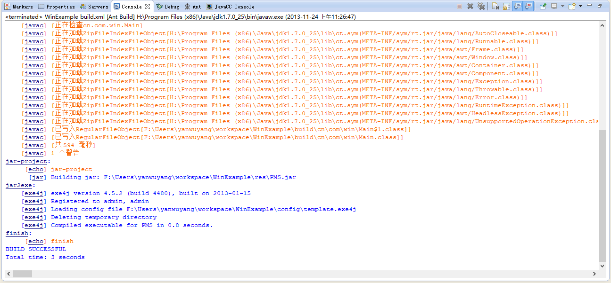
呵呵成功了到我们配置输出的目录看看生成exe的文件是否存在